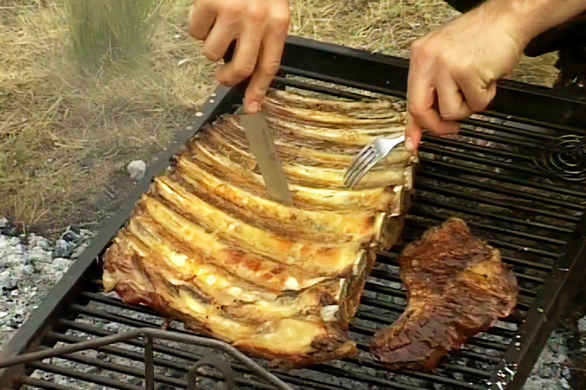

Costillar

Costillar al asador
Coccion lenta a las llamas, con su caracteristico ahumado y crujiente.
Sin duda, el plato fuerte en nuestra cena navideña.
Ingredientes:
Procedimiento:
- Atemperar el costillar, quitar el exceso de grasa
- Quitar la membrana que cubre a las costillas
- Colocar en el asador con las costillas del lado del fuego y agregar salmuera en ambas caras
- Agregar salmuera varias veces durante la coccion
- Una vez que la cara contraria al fuego tome temperatura, girar el costillar
- Dejar 30 minutos mas contra el fuego y retirar 10 minutos antes de servir